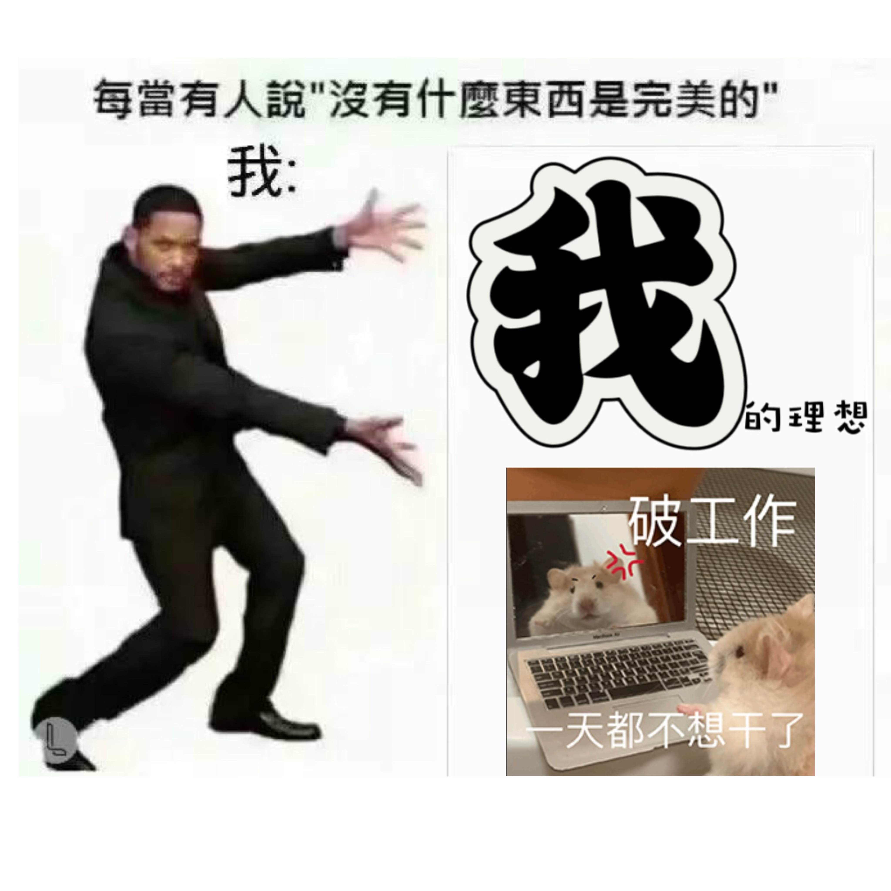
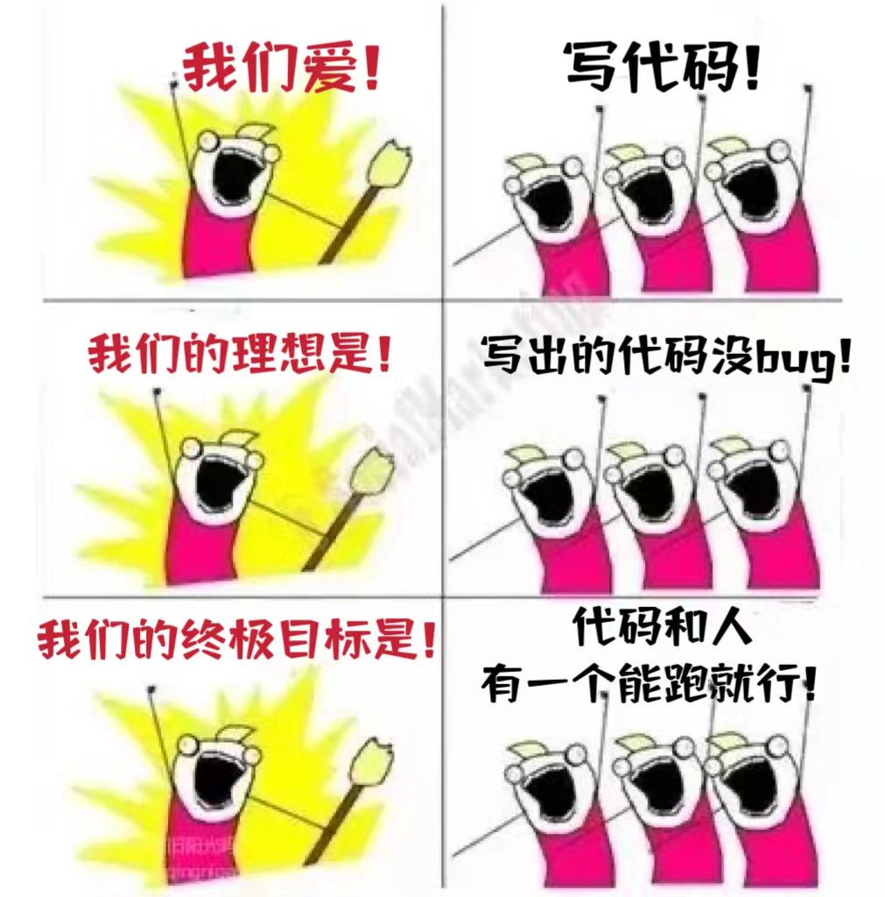

<!DOCTYPE html>
<html lang="en">
<head>
    <meta charset="UTF-8">
    <title>丁好的自我介绍</title>
    <style type="text/css">
        .s1{text-align: justify;
            text-indent:2em}
        body{
            font-family: 华文新魏;
            margin-left: 20%;
            margin-right: 20%;
            margin-top: 30;
            background-color:#FFFFFF;}
    </style>
</head>

<body background="../photo/background.jpg"
    style="background-repeat:no-repeat
background-attachment:fixed;
background-size:100% 160%">
</body>

<body><br>
<h1 align="center"><font color="#9370DB">欢迎来到<q>丁好</q>的主页</font></font></h1><br>
<table><thr>
    <td><ul>组内角色</ul>
    <li>CIO</li>
    <li>程序员</li>
    <li>测试</li>
    </td>
    <td></td>
    <td></td>
</thr></table><br>

<big>我是来自浙江宁波的丁好，喜欢跳舞，也会玩一点音乐游戏比如Phigros（虽然很菜hhh)<br><br>性格方面，我热情开朗，喜欢活动和团队合作，也在百丽宫担任文艺部部长一职，是阳光活泼调皮的小女孩一只^-^</big>
<big>虽然我的代码基础根本不能和大佬们匹敌，但非常渴望进化出超强的代码能力，梦想成为一个写不出bug的程序猿（好像不太可能/汗<br><br>秉着做项目就认真做、做到最好的原则，我会积极完成小组的各项任务，争取在这一次的项目中提升自我！听懂掌声！！！</big>

</body>
</html>